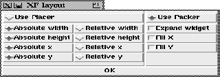

This procedure pops up the layout dialog box. This dialog box provides access to the interactive (direct) placing and packing of widgets. Usually, direct manipulation of the widgets is only allowed when this dialog box is displayed. This can be changed in the options dialog (Options | General Options).

Figure: The procedure XFProcConfLayout
The left side of the dialog box contains placer options. Here, the user can select if the geometry is set in absolute or relative values. The position of a widget can be set by pressing the left mouse button together with Modifier1. If the button is pressed on the border of the widget, the widget can be resized. If a parent contains no placed children, the first time a widget is placed in that parent, a small dialog box warns the user, and gives him the choice to place the parent, too, to keep the size of the parent widget or to abort the placing.
The right side of the dialog box gives access to a number of packer options. These options are applied to a packed widget when the left mouse button is pressed together with Modifier1 in the border region of the widget. To move a widget to a specific border of the parent, the widget is selected with the left mouse button together with Modifier1. Then, the mouse is moved to the border.